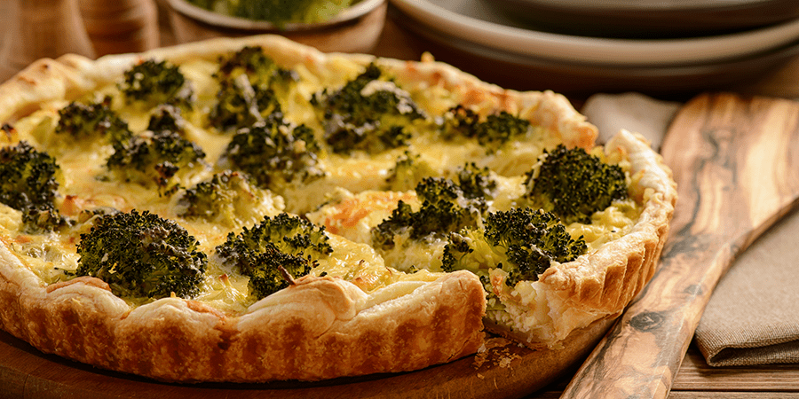

Bienvenidos a Cocina Sin Lactosa, tu lugar ideal para descubrir recetas completamente libres de lactosa. Aquí te ofrecemos una variedad de platillos sencillos y deliciosos, perfectos para quienes desean disfrutar de una alimentación saludable sin preocuparse por la intolerancia. Desde aperitivos hasta postres, cada receta está diseñada para sorprender tu paladar. ¡Explora lo rico y variado que puede ser comer sin lactosa!
1. NATILLAS SIN LACTOSA
Ingredientes:
500 ml de leche sin lactosa,
3 yemas de huevo,
100 g de azúcar,
30 g de maicena,
vainilla y canela al gusto.
Preparación:
Calienta la leche con la vainilla y canela. Mezcla las yemas, el azúcar y la maicena. Agrega a la leche caliente, cocina a fuego bajo hasta espesar y enfría.
2. PASTA CON SALSA DE TOMATE Y ALBAHACA
Ingredientes:
300 g de pasta sin gluten,
400 g de tomates triturados (enlatados o frescos),
2 dientes de ajo,
albahaca fresca al gusto,
aceite de oliva, sal y pimienta.
Preparación:
Cocina la pasta según las instrucciones del paquete. En una sartén, calienta el aceite y sofríe el ajo picado. Agrega los tomates triturados, sal y pimienta, y cocina a fuego lento durante 10 minutos. Mezcla la salsa con la pasta cocida y añade albahaca fresca antes de servir.
3.GALLETAS DE CHOCOLATE SIN LACTOSA
Ingredientes:
200 g de chocolate negro sin lactosa,
100 g de mantequilla sin lactosa,
150 g de azúcar,
2 huevos y
100 g de harina.
Preparación:
Derrite el chocolate y mantequilla. Mezcla con el azúcar y los huevos. Agrega la harina, forma las galletas y hornea a 180 °C por 10-12 minutos.
4. QUICHE DE BRÓCOLI

Ingredientes:
Masa sin gluten (harina de arroz),
1 brócoli cocido,
2 huevos,
200 ml de leche sin lactosa,
sal y pimienta al gusto.
Preparación:
Prepara la masa, mezcla los huevos con la leche y condimentos. Agrega el brócoli, vierte en la masa y hornea hasta que esté firme.
5. TORTILLAS DE AVENA
Ingredientes:
200 g de avena sin gluten,
250 ml de leche sin lactosa,
2 huevos y
canela al gusto.
Preparación:
Mezcla todos los ingredientes hasta obtener una masa homogénea. Cocina en una sartén caliente hasta dorar por ambos lados.
6. ENSALADA CESAR SIN LACTOSA
Ingredientes:
Lechuga romana,
pollo a la parrilla,
crutones (sin gluten) y
aderezo César sin lácteos.
Preparación:
Mezcla todos los ingredientes en un bol grande y sirve con el aderezo por encima.
7. HELADO DE BANANA
Ingredientes:
Bananas maduras congeladas.
Preparación:
Tritura las bananas congeladas en una batidora hasta obtener una textura cremosa. Sirve inmediatamente o congela para una consistencia más firme.
8. PASTA CON SALSA PESTO SIN LACTOSA
Ingredientes:
Pasta sin gluten (de tu elección),
albahaca fresca,
piñones o nueces,
aceite de oliva y
ajo al gusto.
Preparación:
Cocina la pasta. Tritura la albahaca, piñones, ajo y aceite hasta formar una salsa. Mezcla con la pasta cocida.
9. MUFFINS DE BANANA Y AVENA SIN LACTOSA
Ingredientes:
2 bananas maduras,
200 g de avena sin gluten,
2 huevos,
100 ml de leche sin lactosa,
50 g de miel o sirope de arce y
1 cucharadita de polvo de hornear.
Preparación:
Precalienta el horno a 180 °C. Tritura los plátanos y mezcla con los huevos, la leche y la miel. Agrega la avena y el polvo de hornear, mezcla bien. Vierte en moldes para muffins y hornea durante 20-25 minutos o hasta que estén dorados.
10. TARTA RED VELVET SIN LACTOSA
Ingredientes:
250 g de harina sin gluten,
200 g de azúcar,
colorante rojo alimentario (opcional),
cacao en polvo,
aceite vegetal,
vinagre blanco y
leche sin lactosa.
Preparación:
Mezcla todos los ingredientes hasta obtener una masa homogénea, vierte en un molde y hornea a 180 °C por aproximadamente 30 minutos.